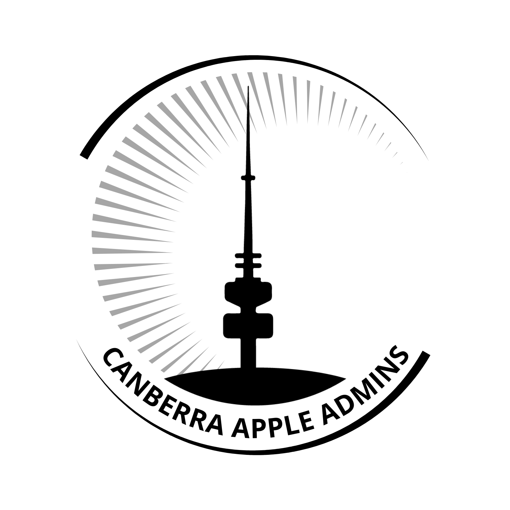

Upcoming Meetup - May 7th 2025
Welcome to the first Canberra Apple Admins Meetup for 2025 hosted by CSIRO
Date: Wed 7th May, 2025
Time: 16:30 (for a 17:00 start)
Location: Discovery Cafe CSIRO
Parking: There's half a dozen parking spots out the front of the main building here.
There is more parking once you pass through the gate. There's an intercom on the gate for Reception which is staffed until 5pm, after this time you will need to park elsewhere. Parking at CSIRO is free, ANU across the road has paid parking options.
Important Note: Anyone parked on site will need to be out before 7pm!
Afterwards: Kick on at Badger and Co at the ANU. It's a 5 min walk from CSIRO.
Register at Eventbrite